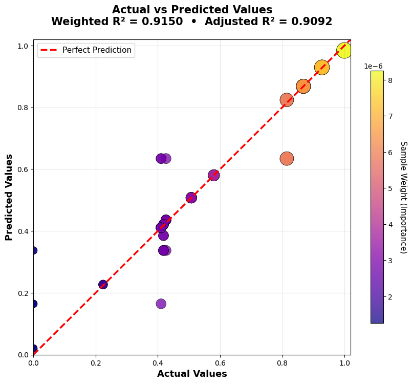
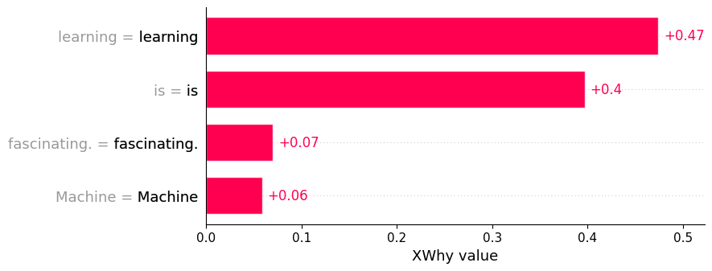
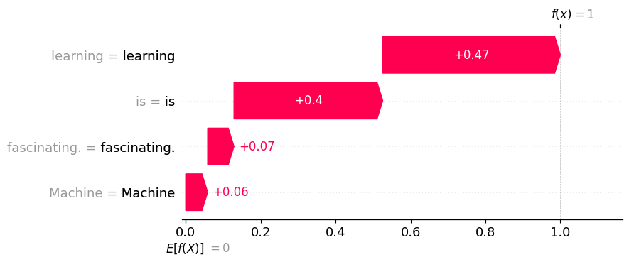
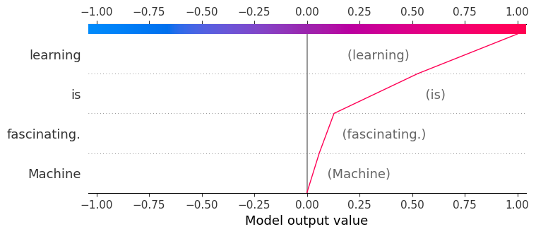
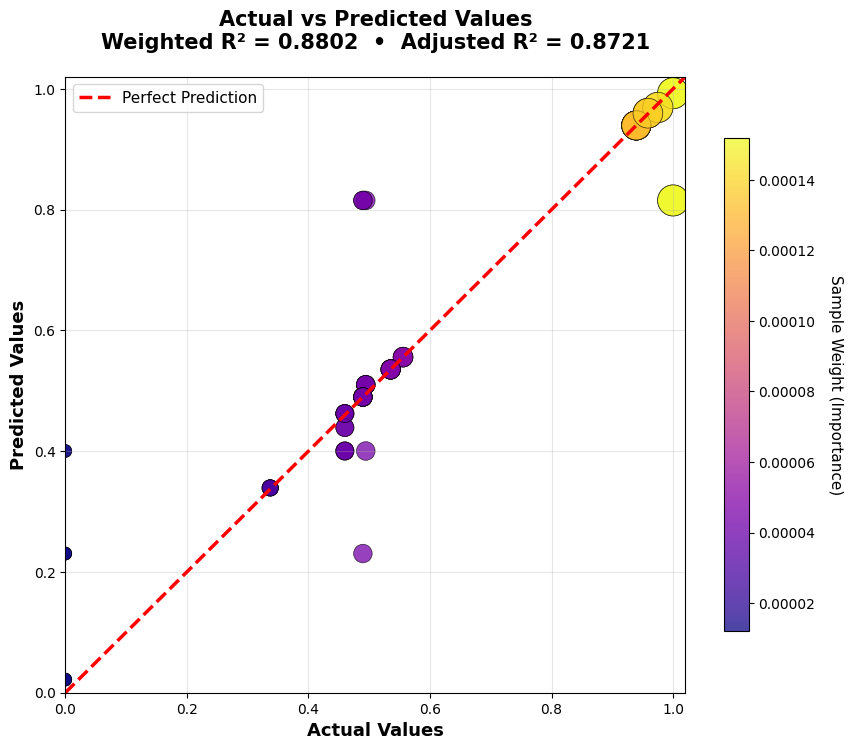
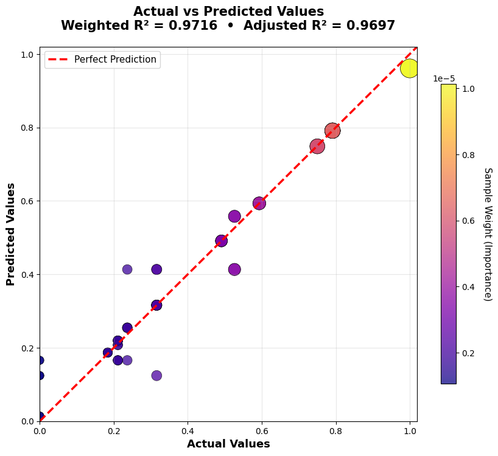
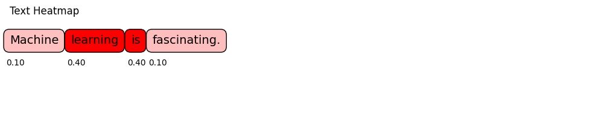
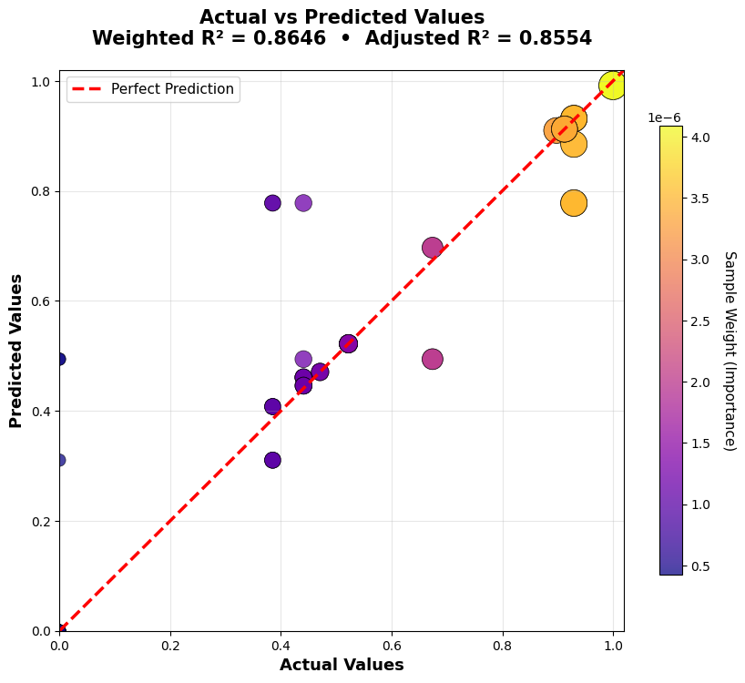
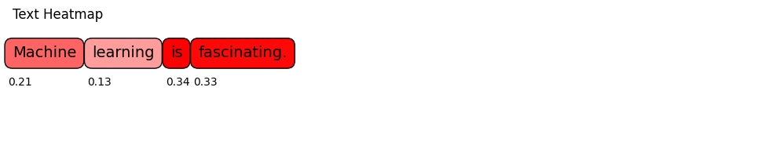

LLM Example¶
Large language model outputs depend on interacting words, tokens, and context. XWhy treats the model as a black box: it obtains the original response, perturbs the input prompt, measures the semantic distance between that response and each perturbed prompt, and fits a local surrogate model that estimates how the prompt terms contribute to this response-alignment score.
This example covers setup, execution, interpretation, and an executed comparison of four embedding backends. It does not expose private chain-of-thought or reconstruct the model's internal computation.
Prerequisites¶
Before starting:
- Install XWhy.
- Obtain access to a supported LLM provider and model.
- Configure the provider credential without committing it to source control.
For OpenAI, the standard .env configuration is:
OPENAI_API_KEY=your_openai_api_key_here
For other providers, local models, cloud platforms, or notebook-specific credential patterns, use the provider configuration guide. Provider-specific constructor arguments must use the names expected by the provider SDK; for example, OpenAI uses api_key, while Hugging Face uses token.
1. Generate a local explanation¶
The following example explains one prompt with an OpenAI model and the default Word2Vec embedding backend:
import xwhy
from xwhy import LLMExplainer
# Required for interactive JavaScript plots in notebook environments.
xwhy.plots.initjs()
explainer = LLMExplainer(
provider="openai",
model_name="gpt-5-nano",
embedding_type="word2vec",
use_best_surrogate=True,
)
result = explainer.explain(
instance="Machine learning is fascinating.",
fidelity_plot=True,
)
print(result.metrics)
xwhy.plots.text_heatmap(result)
result.plot()
Replace model_name with a model available through your provider account.
Notebook credentials
In a notebook, you may pass a credential directly to the constructor, such as api_key=..., but obtain it from a secret store or a hidden prompt rather than writing it into the notebook.
2. Understand the explanation pipeline¶
For the selected prompt, XWhy:
- obtains the original model response;
- generates perturbed versions of the input prompt;
- computes Word Mover's Distance between the original response and each perturbed prompt;
- normalises those distances into the local target scores;
- fits a surrogate model to the perturbation masks and target scores; and
- returns term contributions, evaluation metrics, and diagnostic plots.
The current implementation queries the LLM for the original response only; it does not generate a new LLM response for every perturbed prompt. The result is therefore an explanation of the local prompt-to-response alignment constructed by this pipeline, not a global description of the model.
3. Read the result¶
The token heatmap and contribution plots show the estimated direction and magnitude of each term's contribution to the local response-alignment score. The metrics describe how well the surrogate approximates the sampled score surface near the original prompt.
Important metrics include:
- Weighted R²: proportion of locally weighted variation represented by the surrogate; values closer to 1 indicate a closer fit on the sampled neighbourhood.
- Adjusted weighted R²: weighted R² with a penalty for model complexity.
- MAE and MSE: average surrogate prediction errors; lower values indicate a closer numerical fit.
A strong fidelity score supports the use of the surrogate for that run, but it does not prove that the attribution is causal or universally stable.
4. Worked example: Word2Vec¶
The following results come from an executed run using the sentence:
Machine learning is fascinating.
The automatic surrogate search selected a random forest with these fidelity metrics:
| Metric | Value |
|---|---|
| Weighted R² | 0.9150 |
| Adjusted weighted R² | 0.9092 |
| Mean absolute error | 0.0334 |
| Mean squared error | 0.0061 |
Term attribution¶
In this run, learning and is received the largest contribution estimates. This is evidence about one local response-alignment approximation, not a general linguistic or causal claim about those words.
Surrogate fidelity¶

Each point represents a perturbed prompt. Points closer to the reference line indicate closer agreement between the surrogate prediction and the response-alignment score calculated by the XWhy pipeline.
Alternative contribution views¶
The same explanation can be inspected using ranked, cumulative, or path-based views:
xwhy.plots.bar(result)
xwhy.plots.waterfall(result)
xwhy.plots.text(result)
xwhy.plots.force(result)
xwhy.plots.decision(result)



These plots present the same local contribution estimates in different forms; they are not independent explanations.
5. Compare embedding backends¶
Embedding choice affects how XWhy measures semantic distance between the original response and the perturbed prompt variants. To compare backends fairly, keep the prompt, provider, model, seed, perturbation count, and surrogate-selection setting fixed, and change only embedding_type:
from xwhy import LLMExplainer
embedding_types = ["word2vec", "glove", "paragram_sl", "paragram_ws"]
results = {}
for embedding_type in embedding_types:
explainer = LLMExplainer(
provider="openai",
model_name="gpt-5-nano",
embedding_type=embedding_type,
seed=1024,
num_perturbations=64,
use_best_surrogate=True,
)
results[embedding_type] = explainer.explain(
instance="Machine learning is fascinating.",
fidelity_plot=True,
)
The executed comparison produced:
| Embedding | Weighted R² | Adjusted weighted R² | MAE |
|---|---|---|---|
| Word2Vec (Google News) | 0.9150 | 0.9092 | 0.0334 |
| GloVe | 0.8802 | 0.8721 | 0.0362 |
| Paragram-SL | 0.9716 | 0.9697 | 0.0219 |
| Paragram-WS | 0.8646 | 0.8554 | 0.0436 |
Paragram-SL had the closest surrogate fit in this particular run. This table is not a general ranking: performance can change with the prompt, generated response, embedding, perturbations, and random seed.
GloVe¶

Paragram-SL¶


Paragram-WS¶


Word2Vec, GloVe, and Paragram-SL produced broadly similar emphasis for this sentence, while Paragram-WS distributed importance more evenly. When an attribution is sensitive to the embedding backend, report that sensitivity rather than selecting only the most convenient result.
6. Use a reproducible configuration object¶
For experiments, place the explanation settings in an LLMConfig object:
from xwhy import LLMExplainer
from xwhy.core import LLMConfig
config = LLMConfig(
provider_type="openai",
model_name="gpt-5-nano",
max_tokens=200,
temperature=0,
seed=1024,
num_perturbations=64,
embedding_type="word2vec",
surrogate_type="lime",
use_best_surrogate=True,
)
explainer = LLMExplainer(config=config)
result = explainer.explain(
instance="Machine learning is fascinating.",
fidelity_plot=True,
)
Record the provider, model identifier, embedding, surrogate policy, perturbation count, seed, package version, and date of execution. See Reproducible Explanations for a fuller checklist.
7. Handle provider and setup errors¶
Use explicit error handling around provider calls:
try:
result = explainer.explain(
instance="Machine learning is fascinating.",
fidelity_plot=True,
)
except Exception as error:
print(f"The explanation could not be generated: {error}")
Common causes include:
- a missing or incorrectly named credential;
- a model that is unavailable to the provider account;
- an empty or filtered provider response;
- a network or provider-side failure; and
- an embedding cache directory that is unavailable or not writable.
XWhy raises an explicit error when a provider returns no usable response, allowing the application to log, retry, or safely stop the explanation workflow.
For pipeline diagnostics, use the logging guide.
Interpretation and reporting guidance¶
When reporting an LLM explanation:
- describe it as a local perturbation-based response-alignment approximation;
- include surrogate fidelity metrics;
- state the embedding backend and sampling configuration;
- test whether the main attribution pattern changes across reasonable settings; and
- avoid presenting term contributions as hidden reasoning, causal proof, or a complete safety assessment.
The LLM explainer overview summarises the capability, and the API reference provides the implementation interface.